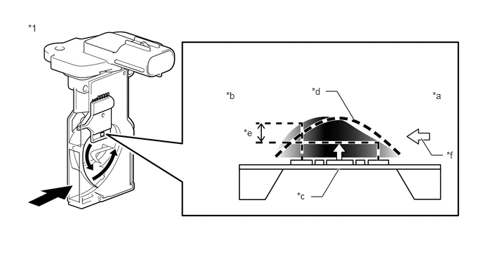

| Last Modified: 10-07-2025 | 6.11:8.1.0 | Doc ID: NM100000002KCM0 |
| Model Year Start: 2024 | Model: Tacoma HV | Prod Date Range: [03/2024 - ] |
| Title: T24A-FTS (ENGINE CONTROL): SFI SYSTEM (for 1Motor-HEV Model): MASS AIR FLOW METER; 2024 - 2026 MY Tacoma HV [03/2024 - ] | ||
MASS AIR FLOW METER
CONSTRUCTION
(a) The intake mass air flow meter sub-assembly, which is slot-in type, allows portion of the intake air to flow through the detection area.
(b) This intake mass air flow meter sub-assembly has built-in intake air temperature sensors.
(c) Intake air flows over the temperature sensor (before heater), the heater, and then the temperature sensor (after heater) on the silicon chip sensor in the by-pass passage. As the intake air is warmed up when it is exposed to the heater, the temperature of the intake air flowing over the temperature sensor (after heater) is higher than that over the temperature sensor (before heater). The difference in temperature of the intake air at each temperature sensor varies depending on the velocity of the intake air that flows over the silicon chip sensor. The temperature sensor bridge circuit detects the difference in temperature and the control circuit converts it into a pulse signal and outputs it to the ECM. When the temperature detected by the temperature sensor (before heater) is higher than that detected by the temperature sensor (after heater), backflow of the intake air is detected.
(d) The ECM calculates the intake air amount based on the pulse signal received from the intake mass air flow meter sub-assembly, and uses it to determine the fuel injection duration necessary for an optimal air-fuel ratio.
(e) The heater control bridge circuit has a temperature sensor and power transistor, and maintains the temperature differential between the heater temperature and intake air temperature at a specific level.
|
*1 |
Intake Mass Air Flow Meter Sub-assembly |
- |
- |
|
*a |
Upstream Side |
*b |
Downstream Side |
|
*c |
Heater |
*d |
Temperature Distribution Without Airflow |
|
*e |
Flow Rate Detection by Temperature Differential |
*f |
Intake Air |
HINT:
When either of these DTCs is stored, the ECM enters fail-safe mode. During fail-safe mode, the ECM calculates the fuel injection duration based on the engine speed and throttle valve angle. Fail-safe mode continues until a pass condition is detected. For details, refer to the Repair Manual.